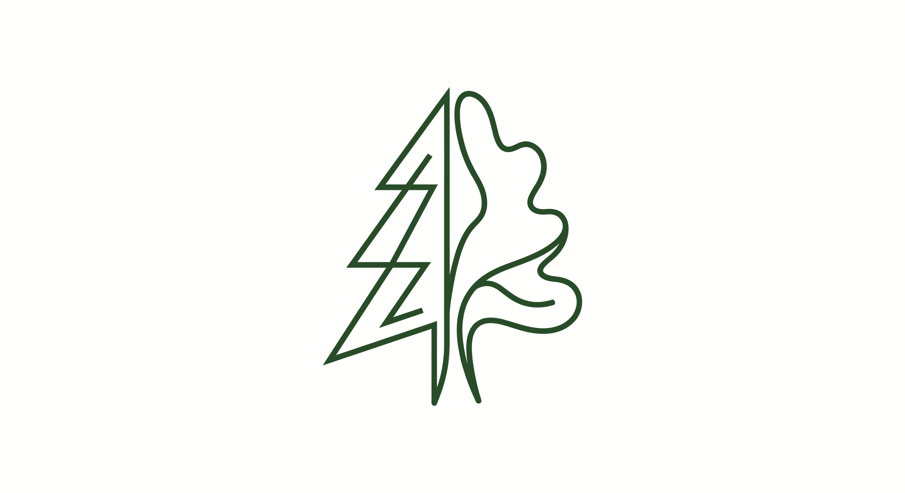

Параметры пробы
Площадь пробы: 1.00 га
Точковка деревьев
Предварительные итоги (на 1 га)
* Запас вычисляется по формуле цилиндра с видовым числом ствола (f=0.42). Данные масштабируются на 1 гектар исходя из расчетной площади пробы.

* Запас вычисляется по формуле цилиндра с видовым числом ствола (f=0.42). Данные масштабируются на 1 гектар исходя из расчетной площади пробы.